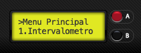
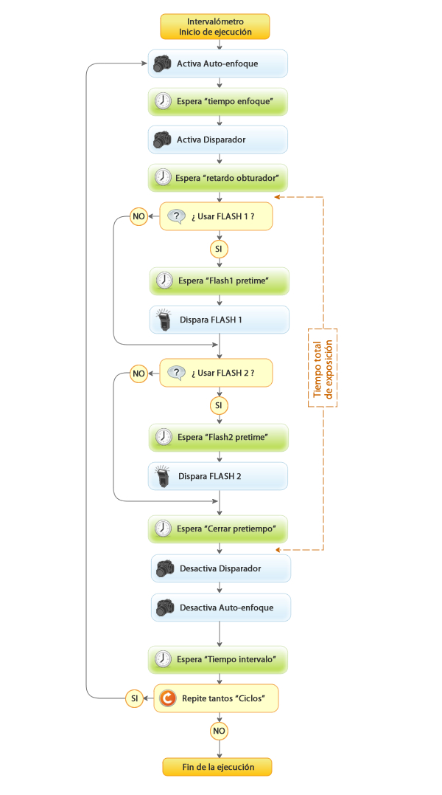

Este modo de ejecución es utilizado para tomar fotografías en intervalos configurables. Puedes elegir el tiempo de intervalo en segundos, minutos, horas y días, y otros parámetros que definen el funcionamiento.
Opciones
Cuando entras en esta opción del menú principal, encontrarás 3 opciones.
- Configuración: Define los parámetros de este modo de ejecución que intervienen en el “Ciclo de vida de ejecución” mostrado más abajo.
- Run: Al entrar en esta opción, comenzará la ejecución de este modo como se describe más abajo en el “Ciclo de vida de ejecución”. Para cancelar la ejecución, mantén pulsado cualquiera de los dos botones hasta que aparezca en la pantalla “Cancelando…”.
- Reset config: Esta opción volverá todos los parámetros de este modo al sus valores por defecto.
Parámetros de configuración
| Parámetro | Valores | Función |
|---|---|---|
| Tiempo enfoque |
|
Tiempo en milisegundos usado para el enfoque automático de la cámara. Solamente es necesario si la cámara está en modo AF. Si la cámara está en modo de enfoque manual, este valor debe ser cero. |
| Pretiempo Flash1 |
|
Tiempo en milisegundos a esperar antes de disparar el FLASH1. |
| Pretiempo Flash2 |
|
Tiempo en milisegundos a esperar antes de disparar el FLASH2. |
| Pretiempo Cerrar |
|
Tiempo en milisegundos a esperar antes de cerrar el obturador. |
| Unid. Intervalo |
|
Define las unidades de medida para el valor del intervalo. |
| Valor Intervalo |
|
Define el valor del intervalo para la unidad de medida anteriormente configurada. |
| Ciclos |
|
Número de veces que se debe repetir el “Ciclo de vida de ejecución”. Si el valor es cero equivale a infinitas repeticiones. |
Ciclo de vida de ejecución

Notas importantes
El tiempo total de exposición es la suma de todos los tiempos de espera entre la apertura del obturador (justo después de esperar el retardo del obturador) y el cierre del obturador (justo antes de desactivar el disparador) siempre que la cámara esté configurada en modo BULB.
Si la cámara no está configurada en modo BULB, el tiempo de exposición total será entonces el indicado por la velocidad de obturación seleccionada en la cámara.
Si la cámara está configurada en enfoque manual, el tiempo de enfoque se debe configurar a valor “cero” para no insertar tiempos innecesarios.
Si la cámara está configurada en enfoque automático el tiempo necesario para enfocar dependerá de la escena, dandose la posibilidad de que no se dispare el obturador por falta de enfoque.
Si el parámetro “Ciclos” tiene valor “cero” es equivalente a “infinito”, por lo que el proceso se repetirá continuamente hasta que se cancele manteniendo pulsado alguno de los dos botones.